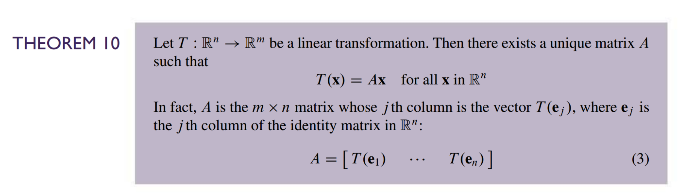
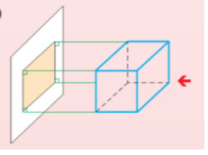

Linear Algebra Applications in Computer Graphics
Introduction
The field of Linear Algebra is essential in computer graphics and video game development. As such, there are many topics that could be discussed. This document, however, will mainly focus on the basics.
The Basics
In computer graphics, a model is constructed from a set of vertices and connecting edges that form triangles. A vertex is simply a point in space. In order to apply a linear transformation to an object, each of its vertices must be independently transformed.
Linear transformations such as translation, rotation, scaling and projection are the most fundamental to both 2D and 3D graphics. These types of linear transformations will form a majority of the discussions to take place herein.
Linear Transformations
Recall that by definition a linear transformation satisfies:
\[T(c_1\vec{u_1} + ... + c_n\vec{u_n}) = c_1T(\vec{u_1}) + ... + c_nT(\vec{u_n}) = \vec{b}\]
We can re-write this as a matrix equation \(A\vec{x}=\vec{b}\) by using the row-vector rule:
\[\begin{bmatrix} T(\vec{u_1}) & ... & T(\vec{u_n}) \end{bmatrix} \begin{bmatrix} c_1 \\ ... \\ c_n \end{bmatrix} = \vec{b} \]
If we consider the images of the columns of the \(n \times n\) identity matrix under the transformation \(T\), we can find the standard matrix of the transformation \(T\). This is Theorem 10 of our textbook:

The Standard Matrix for Important Linear Transformations
Let’s start with the most simple linear transformation, scaling.
That wasn’t so difficult! Let’s move on to a slightly more difficult transformation - rotation.
Moving on to translation - this one is the most difficult to understand.
Multiple transformations may be combined into one matrix. Incorporating 2D translations will require that our rotation and scaling matrices are of the same size.
We apply the same technique used in the translation section to raise our \(\mathbb{R}^2\) vectors to \(\mathbb{R}^3\) and \(2 \times 2\) matrices to \(3 \times 3\) - we simply can ignore the extra \(x_3\)-coordinate in the results.
\[\begin{bmatrix}s_x & 0 & 0 \\ 0 & s_y & 0 \\ 0 & 0 & 1 \end{bmatrix}\]
\[\begin{bmatrix} cos(\theta) & -sin(\theta) & 0 \\ sin(\theta) & cos(\theta) & 0 \\ 0 & 0 & 1 \end{bmatrix}\]
\[\begin{bmatrix}1 & 0 & t_x \\ 0 & 1 & t_y \\ 0 & 0 & 1 \end{bmatrix}\]
To combine transformations on \(\vec{x}\) to achieve \(\vec{x}'\), we simply need to multiply them in the correct order:
\[A_n \times A_{n-1} \times ... \times A_2 \times A_1 \times \vec{x} = \vec{x}'\]
where \(A_1\) is the transformation we want applied first and \(A_n\) last.
3D Graphics
The same method used to derive the standard matrices for 2D transformations above can be applied to higher dimensions. The 3D-equivalent matrices can also be combined into one matrix to perform multiple operations at a time. Scaling, rotation, and translation are just as pivotal for both 2D and 3D.
In 3D graphics, however, we are dealing with a 3D world that must be displayed on a 2D monitor. To accomplish this, the 3D world must be projected onto the near plane of the virtual camera. This is a linear transformation that is not so commonly used in 2D graphics.
There are a couple types of projection, though orthogonal and perspective projection are the most common.


Perspective projection is trickier to understand, but is necessary when we want to emulate the way our eyesight works.
Orthogonal projection is used for shadow casting, as the rays of light coming from the sun are effectively perpendicular with the surface of the earth.
3D Rendering
The set of vertices and triangles (a set of 3 edges) that compose an object are uploaded to the GPU before rendering takes place. A program that runs on the GPU called a vertex shader then apply a series of transformations on each of the vertices. Then the fragment shader will determine the color of each pixel in the area formed by the transformed vertices of each triangle.
We use \(4 \times 4\) matrices to represent 3D transformations such that we can accommodate for 3D translation and combine multiple operations into one matrix.
The precise reason that 4x4 matrices are used in computer graphics instead of 3x4 matrices (which would also be plausible to allow for translation) is more complicated, but that is beyond the scope of this document. A more in-depth explanation can be found here.
There are various coordinate spaces to consider in 3D graphics.
- First, there is model space in which coordinates are defined relative to the center of the model.
- Next, there is world space in which coordinates are defined relative to the center of the world.
- Then we have camera/view space in which coordinates are defined with respect to the position and rotation of the camera.
- Finally there is screen space, a 2D space conventionally relative to the bottom left of the screen.
- This space represents the coordinate space of pixels on the monitor.
The vertex shader performs a couple of operations to eventually transform an object into screen space for rendering onto your 2D monitor.
The vertices of the object are defined in model space. These must be transformed into world space by applying the modelMatrix. Then, we transform into camera space by applying the viewMatrix. Finally, we project the 3D world onto the near plane of the camera by applying the projectionMatrix.
attribute vec3 vertexPosition;
uniform mat4 modelMatrix;
uniform mat4 viewMatrix;
uniform mat4 projectionMatrix;
void main() {
gl_Position = projectionMatrix * viewMatrix * modelMatrix * vec4(vertexPosition, 1.0);
}Wrapping Things Up
As we have seen, linear transformations are fundamental to graphics rendering. There is so much more detail to dive into with nearly all of the topics touched on in this document, and so many more applications of linear algebra to uncover.
I have created a relatively bare-bones demo of the bare basics that go into a 3D first-person game controlled by the WASD keys and mouse. This is intended to be purely educational and instructive, and as such is heavily commented. I encourage the reader to dive into the code, regardless of programming knowledge, with the intention of gaining a deeper understanding and intuition for the raw concepts that go into creating such a thing.
You can find the github repo for this demo here as well as a live demo of it here.
Currently, the demo only consists of a basic flat-shaded plane for the floor, a skybox, a cube, simulated daylight cycle, and shadow casting. The orthogonal camera used for shadow casting has its bounding box displayed for demonstration purposes. There is no collision resolution. I implemented a relatively basic physics simulation by applying kinematics equations from Physics 1.
I make no guarantees that this demo is completely bug-free. In fact, I believe there are some flaws in the application of kinematics equations in the physics simulation that I have yet to solve (notably in handling the “jump” mechanic). That is beyond the scope of this project, however.